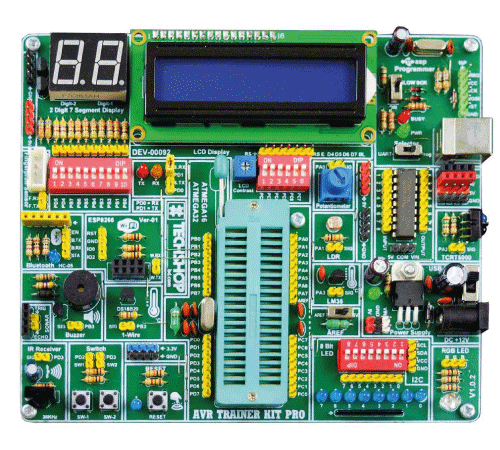
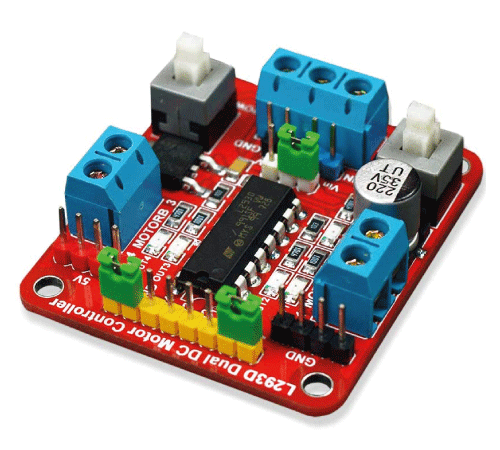

PCB & Hardware Designs
Professional PCB Design & DFM Workflow
In our hardware development workflow, every PCB design goes far beyond basic software layout to meet strict global manufacturing standards and DFM (Design for Manufacturability) rules. Before sending the production files to advanced overseas fabrication facilities, every design is rigorously optimized to ensure:
- Gerber & Drill Files Precision: Generating 100% accurate Gerber and drill files for high-precision machining and flawless pin/hole alignment.
- Trace Width & Clearance: Maintaining proper clearance, trace widths, and creepage distances between high-voltage and low-voltage sections to completely eliminate short circuits and signal noise.
- Surface Finish & Silkscreen: Utilizing high-grade solder masks, crystal-clear silkscreen labels (such as pinouts, component values, and warning symbols), and professional finishes (HASL/ENIG).

Sample batch of production-ready custom PCBs fabricated overseas, featuring precision-routed traces and DFM compliance.

AVR Programmer
ToolThe AVR Programmer is a USB-powered circuit board featuring an ATmega8 microcontroller designed to read and write firmware, EEPROM, and fuse bits for various AVR microcontrollers using AVRDUDESS. Equipped with both a ZIF socket and an ISP connector, it supports flexible programming for a wide range of Mega and Tiny series chips. It includes status indicator LEDs, a pin-selection switch, and a slow SCK option for safe and reliable programming across multiple operating systems.
Key Components: USB Type-B, ZIF Socket, ISP Headers.

AVR Trainer Kit Pro
Development BoardThe AVR Trainer Kit Pro is a comprehensive multi-periphery educational development board built around ATmega16 and ATmega32 microcontrollers. Engineered for academic laboratories and embedded training workshops, it features integrated hardware modules including 16x2 LCD, 4-digit 7-segment displays, real-time sensors, and wireless expansion slots. It provides structured breakout headers to enable seamless experimentation and rapid prototype debugging for students.
Key Components: ATmega16/32, LCD, 7-Segment, LEDs, RGB LED, Buzzer, DS18B20, LDR.

PIC Programmer
Development ToolThe PIC Programmer is a USB-powered development tool featuring Microchip PICkit2 firmware architecture for writing and verifying microchip flash memory. Equipped with both an onboard ZIF socket and an ICSP connector, it offers highly flexible programming capabilities for a vast array of 8-bit, 16-bit, and 32-bit microcontrollers. The ZIF socket accommodates multiple pin layouts, backed by status LEDs and a dedicated selector switch for operational safety.
Key Features: ZIF Socket, 3-Channel Logic Analyzer, Built-in USB to Serial, ICSP Support

L293D Dual DC Motor Controller
CommercializedThe L293D Dual DC Motor Controller is a compact and reliable dual H-bridge driver module engineered to operate two DC motors or a single stepper motor simultaneously. Built around the industry-standard L293D integrated circuit, it features onboard 5V logic regulation, independent motor enable switches, and heavy-duty screw terminal blocks. It ensures secure current handling and directional management for mobile robots and automated prototypes.
Key Components: L293D IC, 5V Logic Regulator, Terminal Blocks, Enable Switches